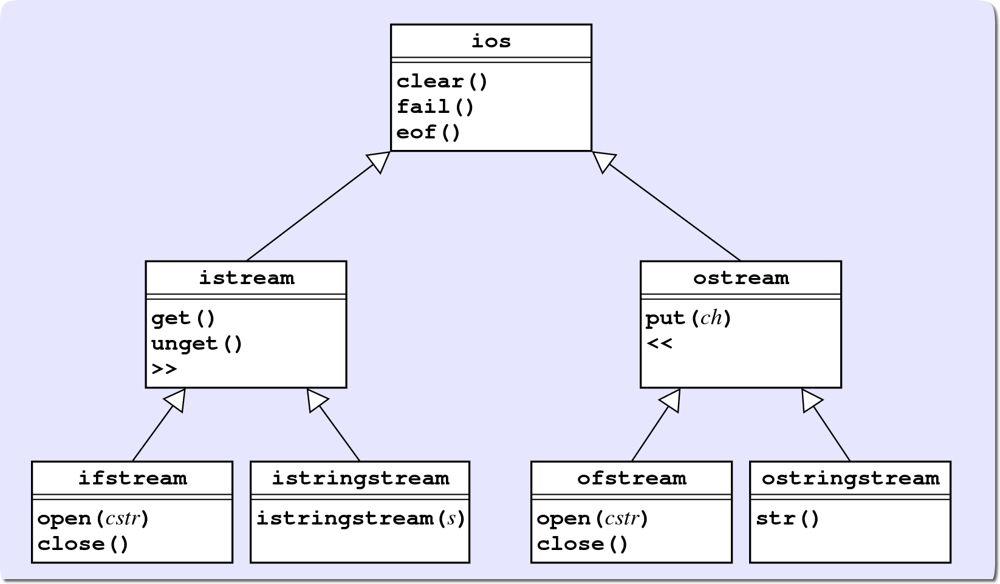

UML Diagrams
Simple diagrams that show the relationships among classes are useful, but often we want to expand them to include the member functions exposed at each level. This diagram is a standard way of displaying a class hierarchy called the Unified Modeling Language, or UML. In UML, each class appears as a rectangular box whose upper portion contains the name of the class.

In a UML class diagram, the public member functions of the class appear in the lower portion. In UML, derived classes use open arrowheads to point to their base classes.
UML diagrams make it easy to determine which inherited member functions are available to each of the classes in the diagram. Because each class inherits all of the members of every class in its ancestor chain, an object of a particular class can call any member function defined in any of those classes.
For example, the diagram above shows that any ifstream object can call these member functions:
- The open() and close() functions from the ifstream class itself
- The get() and unget() member functions, as well as the >> operator from the istream class
- The clear(), fail(), and eof() functions from the ios class
 This course content is offered under a
CC
Attribution Non-Commercial license. Content in this course
can be considered under this license unless otherwise noted.
This course content is offered under a
CC
Attribution Non-Commercial license. Content in this course
can be considered under this license unless otherwise noted.